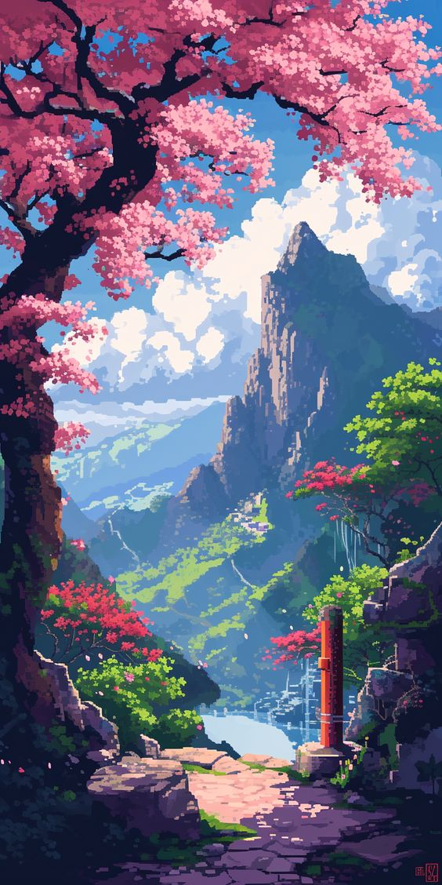

Welcome To My Site
Pixel Art

"Pixel Art" adalah bentuk seni digital yang diciptakan melalui pengaturan dan pengeditan gambar pada tingkat piksel. Gaya seni ini memanfaatkan resolusi rendah, sehingga setiap piksel terlihat jelas dan memiliki dampak visual yang signifikan.
Dengan palet warna yang sering kali terbatas, pixel art mengandalkan detail-detail kecil untuk mengekspresikan ide atau karakter, menciptakan estetika yang unik dan menarik. Meskipun tampak sederhana, teknik yang digunakan dalam pixel art seperti aliasing dan anti-aliasing, serta dithering, memerlukan keterampilan dan pemahaman yang mendalam untuk menghasilkan karya yang halus dan menyatu dengan baik.
Seni ini memiliki sejarah yang kaya, pertama kali populer pada era 8-bit dan 16-bit dalam industri video game pada tahun 1980-an dan 1990-an. Pada masa itu, keterbatasan hardware membuat pixel art menjadi solusi ideal untuk menciptakan grafis yang menarik dan efisien.
Hingga kini, pixel art tetap populer, tidak hanya karena nostalgia tetapi juga karena tantangan artistik yang unik dan fleksibilitasnya dalam berbagai aplikasi. Game, animasi, dan desain grafis adalah beberapa bidang di mana pixel art sering digunakan, dari sprite kecil dalam game hingga elemen UI dan ikon.